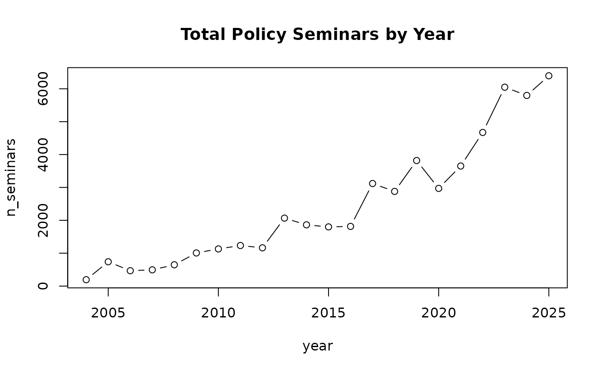

Annual panel of policy seminar hosting activity for legislators in the 16th through 22nd Korean National Assembly. Policy seminars (jeongchaek semina) are informal legislative events where MPs invite experts, stakeholders, and colleagues from other parties to discuss policy issues.
Format
A data frame with 5,962 rows and 18 variables:
- name
Legislator name in Korean
- member_id
Legislator identifier (MONA_CD, links to
legislators$member_id). Available for ~95\NAfor unmatched or ambiguous (homonym) cases.- year
Calendar year
- assembly
Assembly number (17-22)
- party
Party affiliation
- camp
Political camp: "liberal", "conservative", "progressive", or "other" (values are in Korean)
- seniority
Number of terms served
- n_seminars
Number of policy seminars hosted that year
- n_cross_party
Number of seminars co-hosted with other-party legislators
- cross_party_ratio
Share of seminars that were cross-party (0-1)
- avg_coalition_size
Average number of co-hosts per seminar
- is_governing
Logical: belongs to the governing (presidential) party
- is_female
Logical: female legislator
- is_proportional
Logical: proportional-representation member
- is_seoul
Logical: represents a Seoul district
- province
Province/metro area of electoral district
- total_terms
Total assembly terms served across career
- n_bills_led
Number of bills proposed as lead proposer that year
Details
Policy seminars are a distinctive feature of the Korean National Assembly.
Unlike floor speeches or committee hearings, seminars are voluntary and
allow legislators to signal policy expertise and build cross-party ties.
The cross_party_ratio variable captures how often a legislator
cooperates across party lines in this informal arena.
The is_governing variable enables difference-in-differences designs:
when a party transitions from opposition to governing (or vice versa),
does its members' cross-party collaboration change?
Examples
data(seminars)
# Cross-party collaboration by governing status
tapply(seminars$cross_party_ratio, seminars$is_governing, mean, na.rm = TRUE)
#> FALSE TRUE
#> 0.3155702 0.2804488
# Seminar activity over time
agg <- aggregate(n_seminars ~ year, data = seminars, FUN = sum)
plot(agg, type = "b", main = "Total Policy Seminars by Year")

# Gender gap in seminar hosting
tapply(seminars$n_seminars, seminars$is_female, median, na.rm = TRUE)
#> FALSE TRUE
#> 4 7